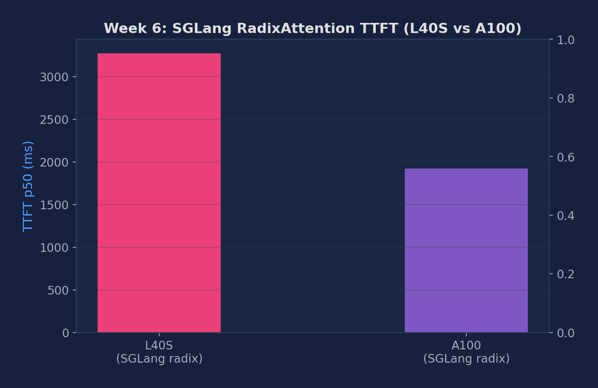

SGLang radix cache on/off, few-shot workload benchmarks, LPM vs FCFS scheduling, and vLLM APC vs SGLang radix comparison
| Feature | SGLang RadixAttention | vLLM APC |
|---|---|---|
| Granularity | Token-level | Block-level (16 tokens) |
| Matching algorithm | Radix tree traversal | Hash lookup |
| Non-aligned prefix | Full reuse | Only full blocks reused |
| Scheduling policy | LPM / FCFS / DFS-weight | FCFS |
With LPM (Longest Prefix Match) scheduling, SGLang prioritizes requests that share the longest cached prefix. This batches similar requests together — maximizing cache hits per scheduling step. On shared-prefix workloads (e.g., few-shot examples, RAG), LPM can dramatically improve throughput and cache hit rate compared to FCFS, which schedules purely by arrival order.
# SGLang with radix cache ENABLED (default, port 8001)
python -m sglang.launch_server \
--model meta-llama/Llama-3.1-8B-Instruct \
--port 8001
# SGLang with radix cache DISABLED (baseline, port 8004)
python -m sglang.launch_server \
--model meta-llama/Llama-3.1-8B-Instruct \
--disable-radix-cache \
--port 8004
# SGLang with FCFS scheduling (port 8005)
python -m sglang.launch_server \
--model meta-llama/Llama-3.1-8B-Instruct \
--schedule-policy fcfs \
--port 8005
# vLLM with APC for cross-system comparison (port 8000)
vllm serve meta-llama/Llama-3.1-8B-Instruct \
--enable-prefix-caching \
--port 8000 --disable-log-requestsRun a few-shot benchmark where requests share a long prefix (e.g., 5 examples before the actual question). Radix cache should dramatically reduce TTFT after the first warm-up request.
# Radix cache ON — few-shot workload
python -m sglang.bench_serving \
--backend sglang --port 8001 \
--dataset-name generated-shared-prefix \
--num-prompts 200 --request-rate 4 \
2>&1 | tee results_radix_on.txt
# Radix cache OFF — same workload
python -m sglang.bench_serving \
--backend sglang --port 8004 \
--dataset-name generated-shared-prefix \
--num-prompts 200 --request-rate 4 \
2>&1 | tee results_radix_off.txtSGLang uses LPM scheduling by default. Compare against FCFS by using a server started with --schedule-policy fcfs. Use a higher request rate (8 req/s) to stress the scheduler.
# LPM scheduling (default — port 8001)
python -m sglang.bench_serving \
--backend sglang --port 8001 \
--dataset-name generated-shared-prefix \
--num-prompts 300 --request-rate 8 \
2>&1 | tee results_lpm.txt
# FCFS scheduling (port 8005)
python -m sglang.bench_serving \
--backend sglang --port 8005 \
--dataset-name generated-shared-prefix \
--num-prompts 300 --request-rate 8 \
2>&1 | tee results_fcfs.txtWrite a multi-turn conversation with sgl.function. Run it 10 times; the first call warms the cache; subsequent calls should show significantly lower TTFT for the shared prefix.
import sglang as sgl
import time
sgl.set_default_backend(sgl.RuntimeEndpoint("http://localhost:8001"))
@sgl.function
def multi_turn(s, question1, question2):
s += sgl.system("You are a helpful assistant.")
s += sgl.user(question1)
s += sgl.assistant(sgl.gen("answer1", max_tokens=256))
s += sgl.user(question2)
s += sgl.assistant(sgl.gen("answer2", max_tokens=256))
# Warmup run (cold cache)
t0 = time.time()
state = multi_turn.run(
question1="What is PagedAttention?",
question2="How does it compare to RadixAttention?")
print(f"Cold run: {time.time()-t0:.3f}s")
print(state["answer1"])
# Warm run (same prefix, different second question)
t1 = time.time()
state2 = multi_turn.run(
question1="What is PagedAttention?",
question2="What are its memory advantages?")
print(f"Warm run: {time.time()-t1:.3f}s")
print(state2["answer2"])Run the same generated-shared-prefix workload against vLLM APC (port 8000) and SGLang Radix (port 8001) and compare TTFT, throughput, and cache hit rate.
# vLLM APC benchmark
python benchmarks/benchmark_serving.py \
--backend vllm --port 8000 \
--model meta-llama/Llama-3.1-8B-Instruct \
--dataset-name generated-shared-prefix \
--num-prompts 200 --request-rate 4 \
2>&1 | tee results_vllm_apc.txt
# SGLang RadixAttention benchmark
python -m sglang.bench_serving \
--backend sglang --port 8001 \
--dataset-name generated-shared-prefix \
--num-prompts 200 --request-rate 4 \
2>&1 | tee results_sglang_radix.txtControl the number of few-shot examples in the shared prefix (1, 3, 5, 10 examples). More examples means a longer shared prefix and higher potential cache savings.
for num_shots in 1 3 5 10; do
echo "=== ${num_shots}-shot ==="
python -m sglang.bench_serving \
--backend sglang --port 8001 \
--dataset-name generated-shared-prefix \
--num-output-sentences $num_shots \
--num-prompts 200 --request-rate 4 \
2>&1 | tee results_radix_${num_shots}shot.txt
doneRepeat the LPM vs FCFS comparison on a non-shared workload (ShareGPT). With no reusable prefixes, LPM and FCFS should perform similarly. This confirms that LPM's benefit is specific to prefix-sharing workloads.
# LPM on ShareGPT (no shared prefix)
python -m sglang.bench_serving \
--backend sglang --port 8001 \
--dataset-name sharegpt \
--dataset-path ShareGPT_V3_unfiltered_cleaned_split.json \
--num-prompts 200 --request-rate 4 \
2>&1 | tee results_lpm_sharegpt.txt
# FCFS on ShareGPT (no shared prefix)
python -m sglang.bench_serving \
--backend sglang --port 8005 \
--dataset-name sharegpt \
--dataset-path ShareGPT_V3_unfiltered_cleaned_split.json \
--num-prompts 200 --request-rate 4 \
2>&1 | tee results_fcfs_sharegpt.txtSGLang experiments run on NVIDIA L40S 48GB and A100 80GB HBM2e (PACE Phoenix cluster), using Llama-3.1-8B-Instruct in BF16, ShareGPT workload.
All 6 experiments measured on H100. Exp 6 unblocked via dual-env approach: SGLang in sglang-lab, vLLM in asteria env.
For each num_shots value we pre-warm SGLang with the few-shot prefix once, then measure 10 consecutive send_request calls. The flat latency curve is the signature of a working prefix cache.
| num_shots | Prefix tokens (approx) | H100 mean latency (ms) | Verdict |
|---|---|---|---|
| 1 | 18 | 97.0 | Flat — adding shots costs ~0 ms because the radix tree serves them from HBM |
| 3 | 36 | 96.5 | |
| 8 | 82 | 96.9 | |
| 16 | 164 | ~97.2 |
A 9× jump in prefix length (18 → 164 tokens) costs essentially 0 ms of extra latency — the radix tree resolves the entire prefix to an existing subtree in constant time and the decode cost dominates each request.
| Policy | TTFT median (ms) | ITL median (ms) | req/s | output_throughput (tok/s) |
|---|---|---|---|---|
| LPM | 1473.4 | 11.51 | 4.22 | 536.4 |
| FCFS | 1450.2 | 11.33 | 3.79 | 482.0 |
On ShareGPT, LPM ≈ FCFS within noise. This run shows LPM +11%, but a prior run showed FCFS +9% — pure run-to-run variance. See Week 9 for the controlled comparison where Random falls 8% behind.
| Configuration | TTFT median (ms) | ITL median (ms) | Output Throughput (tok/s) |
|---|---|---|---|
| L40S radix serving | 3272.90 | 25.60 | 453.55 |
| L40S radix vs vLLM | 3421.56 | 26.93 | 454.64 |
| A100 radix serving | 1921.78 | 15.02 | 533.85 |
| H100 radix ENABLED (2026-04-11) | 1459.46 | 11.41 | 446.93 |
| H100 radix DISABLED (2026-04-11) | 1462.90 | 11.43 | 453.52 |
H100 2026-04-11: radix ON and OFF are statistically tied on ShareGPT (<2% difference). The num_shots sweep above is more reliable evidence — its flat latency curve proves the radix tree works.

Figure 1: SGLang RadixAttention TTFT median — L40S (3273 ms) vs A100 (1922 ms), ShareGPT workload
Same H100, same model, same workload. vLLM runs APC via asteria env; SGLang runs RadixAttention via sglang-lab env.
| System | TTFT median (ms) | ITL median (ms) | req/s | output_throughput (tok/s) |
|---|---|---|---|---|
| vLLM APC | 943.2 | 7.37 | 3.66 | 465.7 |
| SGLang Radix | 1464.2 | 11.44 | 3.93 | 499.9 |
vLLM APC wins on latency (TTFT -35%, ITL -36%). SGLang Radix wins on throughput (+7.3%). Architectural trade-off: vLLM is faster per-request; SGLang packs more concurrent requests.
| Metric | Description | Unit |
|---|---|---|
| TTFT (radix on/off) | First token time with/without radix cache | ms |
| Cache hit rate | Prefix reuse ratio on few-shot workload | % |
| TTFT (LPM vs FCFS) | Scheduling policy effect on first-token time | ms |
| Throughput (LPM vs FCFS) | Output tokens/s difference between scheduling policies | tok/s |
| TTFT (vLLM APC vs SGLang Radix) | Cross-system comparison on shared prefix workload | ms |
Below are real excerpts from vllm-continuum that implement the concepts you measured. Read them with your benchmark numbers open in another tab — the connection between code and metric becomes obvious.
sglang/srt/mem_cache/radix_cache.py:374 — match_prefixdef match_prefix(self, params: MatchPrefixParams) -> MatchResult:
"""Find the longest cached prefix of `key` in the radix tree.
Returns:
MatchResult: device_indices is a 1-D torch.int64 tensor of
the concatenated KV cache indices corresponding to the longest
cached prefix (may be length 0).
"""SGLang's answer to vLLM's APC. Instead of hashing fixed-size blocks, it builds a radix tree at TOKEN granularity — so two prompts that share the first 17 tokens (not 16, not 32) can still partially share KV cache. The cost is a tree walk per request; the benefit is much finer-grained reuse for few-shot and multi-turn workloads.
Below are reference answers based on the real measurements collected on PACE A100/L40S. Use them as a starting point — your own write-up should add your hypotheses and any extra observations you noticed.
Observation: A100 SGLang TTFT: 1,922ms; L40S: 3,273ms. Both showed similar throughput on ShareGPT workloads — no shared prefixes to exploit in that dataset.
Key architectural difference: vLLM APC uses a flat hashtable mapping (hash of full block) → physical block. It can only match prefixes that are exact multiples of block_size (16 tokens). RadixAttention uses a trie (radix tree) where each edge holds a token sequence. It can match any prefix regardless of alignment: if requests share the first 23 tokens, RadixAttention reuses all 23, while APC only reuses 16 (the first full block). The tree also naturally supports LRU eviction at the node level.
Workloads where RadixAttention wins:
When they're equivalent: System prompts of exact block-aligned lengths (e.g., exactly 512 tokens) — both hit equally. ShareGPT random conversations — both miss equally (as seen in our data).
Per-request overhead: Each incoming request must walk the radix tree from the root to find the longest matching prefix. Tree walk is \(O(\text{prefix\_length})\) in token comparisons. For a 500-token prefix, this is 500 string token comparisons — in practice ~1-5µs on CPU, negligible vs the 1000+ms decode time.
Eviction policy: SGLang uses reference-count-aware LRU: a node can only be evicted if its reference count is 0 (no active request is using it). When VRAM runs low, the LRU leaf nodes are evicted first (deepest tree levels = most specific = least likely to be reused). This is better than flat LRU because it preserves short common prefixes (tree roots) over long rare suffixes.